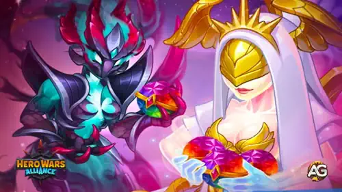
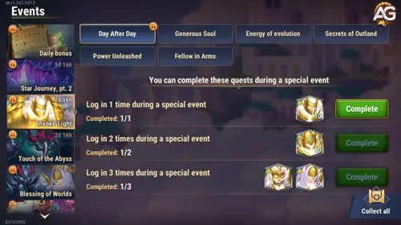

Quer você esteja tentando evoluir seus Titãs ou melhorar os artefatos dos seus heróis, este evento está repleto de oportunidades para impulsionar seu progresso. Neste guia completo, vamos detalhar cada missão do evento principal e das missões paralelas Invocar a Luz e Toque do Abismo, para que você possa maximizar suas recompensas e aproveitar ao máximo todos os três dias.

Evento Bênção dos Mundos, Hero Wars Alliance, um jogo desenvolvido pela Nexters.
O Evento Bênção dos Mundos normalmente dura três dias e inclui uma variedade de missões diárias. Essas missões fornecem recompensas valiosas como:
Recursos de artefato
Pedras da Alma de Titã de Luz e Trevas
Poeira de Fada
Poções de Titã
Pedras de Aparência de Titã
Pedras da Alma de Herói
Os jogadores podem completar diferentes caminhos de missão em três subeventos dentro da Bênção dos Mundos:
Bênção dos Mundos
Invocar a Luz
Toque do Abismo
Bênção dos Mundos – Missões Principais
As missões principais do evento recompensam os jogadores com vários itens, voltados principalmente para o aprimoramento de titãs. Aqui estão as tarefas:
1. Dia Após Dia – Faça Login
Login no Dia 1
Login no Dia 2
Login no Dia 3
2. Alma Generosa – Obtenha Pontos VIP
600 pontos VIP
1500 pontos VIP
4000 pontos VIP
8000 pontos VIP
15000 pontos VIP
3. Troca de Valor – Gaste Esmeraldas
400
1200
2000
3200
4400
6000
8000
10000
14000
19000
26000
35000
46000
60000
80000
100000
4. Artefatos da ValquÃria – Abra Baús de Artefato
1
3
7
11
15
20
30
40
50
5. Jornada – Complete Expedições da Aeronave
1
3
6
9
12
16
21
6. Fusão de Almas – Obtenha Pedras da Alma de Herói
5
10
15
25
50
85
100
7. Invocar a Luz – Complete Tarefas do Evento
Completar essas tarefas recompensa com pedras da alma de Solaris:
1
3
6
9
12
15
18
22
30
40
8. Toque do Abismo – Complete Tarefas do Evento
Completar essas tarefas recompensa com pedras da alma de Tenebris:
1
3
6
9
12
15
18
22
30
40
Missões de Invocar a Luz – Caminho de Solaris
Este subevento foca em missões que recompensam com pedras da alma de Solaris. Cada tarefa completada contribui para adquirir mais recursos para os titãs da Luz.

Missões Invocar a Luz Hero Wars Alliance.
1. Dia Após Dia – Faça Login
1
2
3
2. Alma Generosa – Obtenha Pontos VIP
200
800
2000
5000
7000
3. Energia da Evolução – Gaste Energia
100
300
600
900
1200
1700
2200
3000
5000
9000
14000
20000
4. Segredos de Outland – Abra Baús de Outland
1
3
6
10
15
20
30
50
5. Poder Liberado – Abra Esferas de Invocação de Titã
1
3
5
7
10
15
30
50
80
6. Companheiro de Armas – Ganhe Pontos de Atividade da Guilda
200
600
1200
2000
3200
5000
7000
9000
Missões Toque do Abismo – Caminho de Tenebris
Este subevento recompensa os jogadores com pedras da alma de Tenebris e inclui missões solo e cooperativas para desenvolver os titãs das Trevas.
Missões Toque do Abismo Hero Wars Alliance.
1. Dia Após Dia – Faça Login
1
2
3
2. Alma Generosa – Obtenha Pontos VIP
400
1100
3000
6000
12000
3. Descoberta Heroica – Abra Baús Heroicos
1
3
6
15
30
60
100
150
4. Histórias de Vitoriosos – Complete Missões da Campanha
5
10
20
40
75
110
150
5. Contribuição Titânica – Colete Titanita
75
110
150
250
350
450
550
700
900
6. O Caminho Para Cima – Abra Baús da Torre
5
10
15
20
25
40
60
80
Dicas para Maximizar o Evento
Planeje seu uso de energia: Use energia de forma eficiente durante os três dias, especialmente nas missões de Energia da Evolução.
Abra baús em massa: Guarde baús de Outland e Artefato com antecedência para completar marcos maiores rapidamente.
Coordene com sua guilda: A atividade da guilda e contribuições de titanita são cruciais, então coordene-se para obter o máximo de pontos.
Use esferas de invocação com sabedoria: Esses recursos são limitados, então use-os nos dias em que forem necessários para Poder Liberado.
Verifique as tarefas diárias: Faça login todos os dias para garantir progresso gratuito nas missões "Dia Após Dia" em todos os caminhos.
Você gostou do nossas dicas para o evento Bênção dos Mundos? Há algo que não entendeu ou gostaria de sugerir mudanças? Convidamos você a se juntar à nossa sessão de comentários na página do Alexandre Games Blog. Não hesite em expressar sua opinião, clarificar suas dúvidas e compartilhar sua sugestões. Clique no botão abaixo para começar:

 Super Titã Solaris Hero Wars Alliance
Super Titã Solaris Hero Wars Alliance Guia do Titã Verdoc – Hero Wars Alliance: Mestre das Invocações da Terra
Guia do Titã Verdoc – Hero Wars Alliance: Mestre das Invocações da Terra